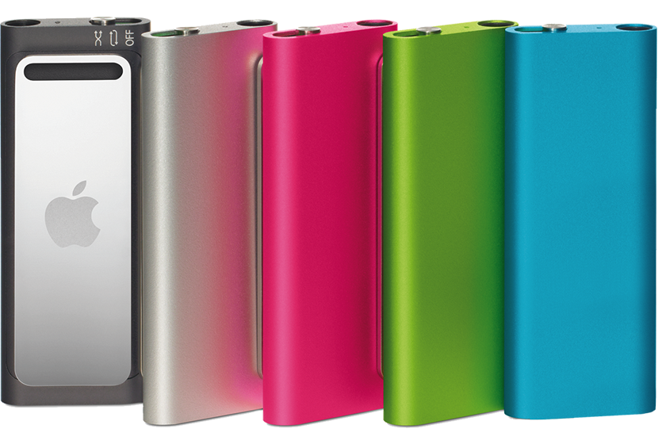
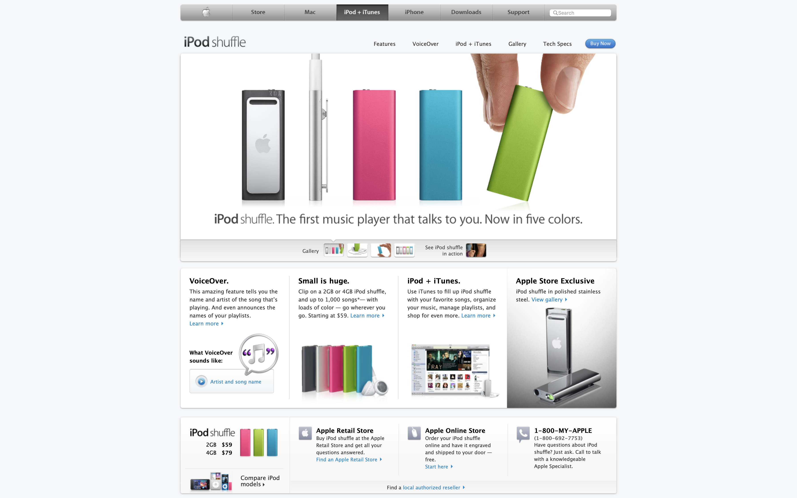

Get your groove on. In four new colors.
The first music player that talks to you. Now in five colors.
iPod shuffle (3rd generation Late 2009) includes a three-position switch that toggles between off, play in order, and shuffle, similar to the original iPod shuffle. This model has a headphone port that also connects to a computer's USB port. It has a clip similar to the iPod shuffle (2nd generation). iPod shuffle (3rd generation Late 2009) is smaller than the previous generations and has one status light. Previous iPod shuffle generations had two.
 